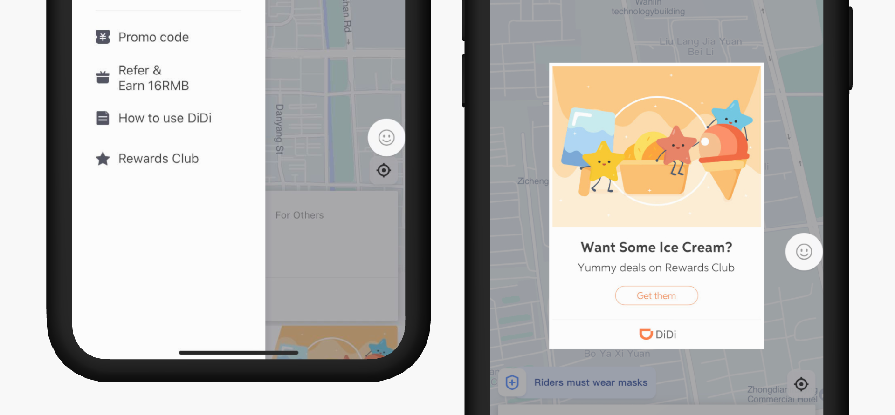

Role
User research,
marketing design
Team
DiDi English Team
Timeline
May - Aug 2020
Location
Beijing, China
DiDi is the main ride-hailing app in China with over 550 million riders. I worked as the sole designer on DiDi English team to design the illustration for the marketing campaign DiDi Saturday - the biggest annual promotion event.
Didi Saturday is the largest annual marketing campaign for DiDi’s English version. Every Saturday, riders receive an automatic 25% discount on all rides. The objective is to incentivize riders to choose Didi over other transportation options through multi-channel marketing exposures, and ultimately create a habit of booking DiDi rides and drive profit.
As the only designer on the marketing team, I created the campaign logo, key visuals, illustration library, and marketing assets for both in-app and social media marketing.
An in-app rewards Program for users to explore deals nearby.
As part of my responsibilities, I designed the program logo, UI, and illustration library.
I worked with 12 partner businesses for the initial launch of the Rewards Club platform to ensure that their brands were adequately represented on Rewards Club. At the same time, I provided visual assets to promote DiDi on their platforms.
Here are some of the visual assets I designed:
Finding the balance between visual design and the message we are sending.
Visual design is essential in capturing users' attention. It is crucial to strike a balance that draws enough attention to keep users focused on the promotional information.
Asking the why behind every element - simplicity is key.
Marketing design isn’t all about making things look pretty. It is important to design with intention with every element on the screen so that the message doesn’t get lost.
Talking to the users.
We made a lot of assumptions about the visual style ex-pats in China would like and neglected the fact that most of them are in China because they like the culture locally. Talking to them helped us redefine the design goal to focus locally, instead of imitating a style that we think Western people would like.